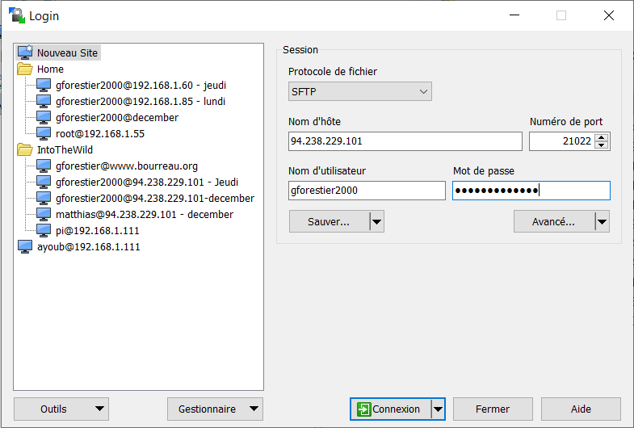
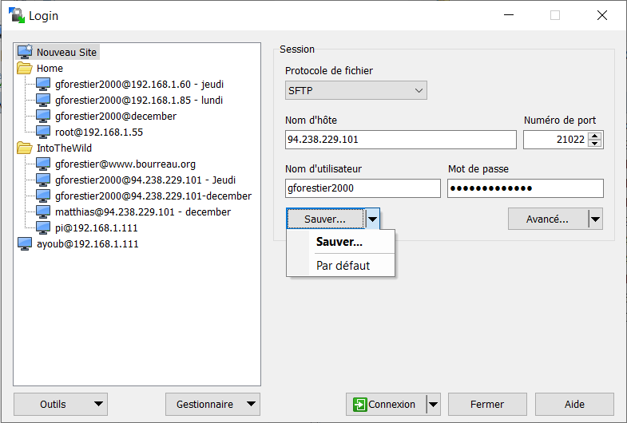
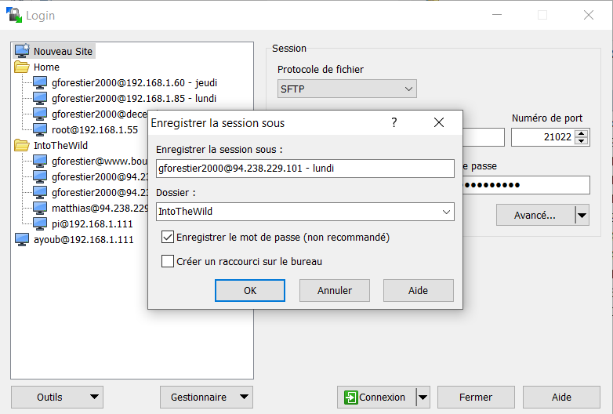
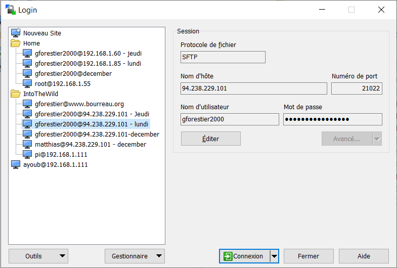

Aujourd'hui (vendredi 7 janvier 2022), l'équipe travaille à distance. L'objectif est de deployer vos sites :
Créer un nouveau site
Rentrer les paramètres
TEST

FIN TEST
TEST 2
FIN TEST 2
TEST 3
FIN TEST 3
Sauver votre nouveau site
Enregistrer la session
Connecter vous à votre nouveau site
